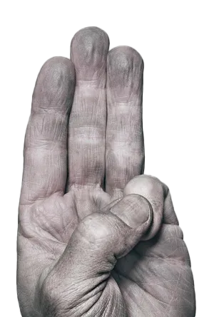

El Levantamiento
LOS JUEGOS DEL HAMBRE
Al final, cuando el Capitolio cae, lo que se derrumba no solo es un gobierno opresivo, sino una estructura visual construida sobre la manipulación de las imágenes y los símbolos. La caída del Capitolio es una victoria no solo física, sino también simbólica. El sinsajo prevalece, y con él, una nueva era en la que los distritos finalmente pueden construir su propia identidad visual, lejos de la sombra del Capitolio.
“¡El fuego se propaga! ¡Y si ardemos, ustedes arderán con nosotros!”. Katniss EverdeenDescargar revista en PDF 